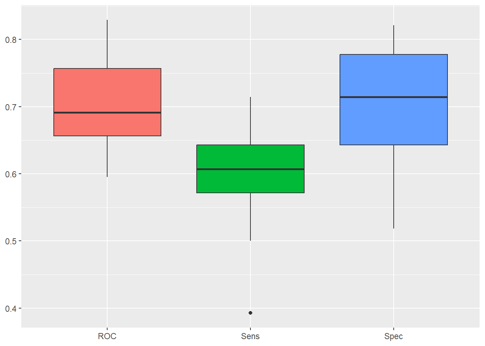
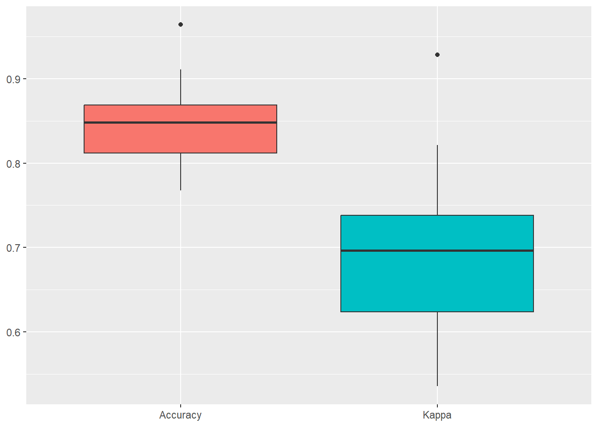

Code
library(ISLR)
library(class)
library(caret)
KNN y Naives Bayes
library(ISLR)
library(class)
library(caret)set.seed(42)
Default$student = as.numeric(Default$student) - 1
default_idx = sample(nrow(Default), 5000)
default_trn = Default[default_idx, ]
default_tst = Default[-default_idx, ]# training data
X_default_trn = default_trn[, -1]
y_default_trn = default_trn$default
# testing data
X_default_tst = default_tst[, -1]
y_default_tst = default_tst$defaultprediccion <- knn(train = X_default_trn, test = X_default_tst,
cl = y_default_trn, k = 3)
head(prediccion)[1] No No No No No No
Levels: No Yescalc_class_err = function(actual, predicted) {
mean(actual != predicted)
}calc_class_err(actual = y_default_tst,
predicted = knn(train = X_default_trn,
test = X_default_tst,
cl = y_default_trn,
k = 5))[1] 0.0312calc_class_err(actual = y_default_tst,
predicted = knn(train = scale(X_default_trn),
test = scale(X_default_tst),
cl = y_default_trn,
k = 5))[1] 0.0284set.seed(42)
k_to_try = 1:100
err_k = rep(x = 0, times = length(k_to_try))
for (i in seq_along(k_to_try)) {
pred = knn(train = scale(X_default_trn),
test = scale(X_default_tst),
cl = y_default_trn,
k = k_to_try[i],
prob = T)
err_k[i] = calc_class_err(y_default_tst, pred)
}# plot error vs choice of k
plot(err_k, type = "b", col = "dodgerblue", cex = 1, pch = 20,
xlab = "k, number of neighbors", ylab = "classification error",
main = "(Test) Error Rate vs Neighbors")
# add line for min error seen
abline(h = min(err_k), col = "darkorange", lty = 3)
# add line for minority prevalence in test set
abline(h = mean(y_default_tst == "Yes"), col = "grey", lty = 2)min(err_k)[1] 0.025which(err_k == min(err_k))[1] 24max(which(err_k == min(err_k)))[1] 24set.seed(430)
default_idx = createDataPartition(Default$default, p = 0.75, list = FALSE)
default_trn = Default[default_idx, ]
default_tst = Default[-default_idx, ]modelLookup("knn") model parameter label forReg forClass probModel
1 knn k #Neighbors TRUE TRUE TRUEsim_knn_mod = train(
default ~ .,
data = default_trn,
method = "knn",
trControl = trainControl(method = "cv", number = 5),
# preProcess = c("center", "scale"),
tuneGrid = expand.grid(k = seq(1, 31, by = 2)))
sim_knn_modk-Nearest Neighbors
7501 samples
3 predictor
2 classes: 'No', 'Yes'
No pre-processing
Resampling: Cross-Validated (5 fold)
Summary of sample sizes: 6001, 6000, 6001, 6001, 6001
Resampling results across tuning parameters:
k Accuracy Kappa
1 0.9549404 0.285462522
3 0.9674713 0.285307451
5 0.9666712 0.171465637
7 0.9666708 0.135341470
9 0.9669375 0.088292308
11 0.9672043 0.069468404
13 0.9670710 0.050052266
15 0.9669377 0.042733863
17 0.9669378 0.036277586
19 0.9666711 0.028424183
21 0.9668044 0.022119740
23 0.9669376 0.014910343
25 0.9666711 0.000000000
27 0.9668044 0.007591791
29 0.9666711 0.000000000
31 0.9666711 0.000000000
Accuracy was used to select the optimal model using the largest value.
The final value used for the model was k = 3.sim_knn_mod$modelType[1] "Classification"get_best_result = function(caret_fit) {
best = which(rownames(caret_fit$results) == rownames(caret_fit$bestTune))
best_result = caret_fit$results[best, ]
rownames(best_result) = NULL
best_result
}head(sim_knn_mod$results, 5) k Accuracy Kappa AccuracySD KappaSD
1 1 0.9549404 0.28546252 0.004546088 0.03614331
2 3 0.9674713 0.28530745 0.001357254 0.06979962
3 5 0.9666712 0.17146564 0.001244230 0.04595492
4 7 0.9666708 0.13534147 0.001705829 0.04340112
5 9 0.9669375 0.08829231 0.001020000 0.04997633get_best_result(sim_knn_mod) k Accuracy Kappa AccuracySD KappaSD
1 3 0.9674713 0.2853075 0.001357254 0.06979962plot(sim_knn_mod)sim_knn_mod$finalModel3-nearest neighbor model
Training set outcome distribution:
No Yes
7251 250 head(predict(sim_knn_mod, newdata = default_tst, type = "prob")) No Yes
1 1 0
2 1 0
3 1 0
4 1 0
5 1 0
6 1 0caret::confusionMatrix(predict(sim_knn_mod), dp_entr_NUM$CLS_PRO_pro13)library(FNN)
library(MASS)
data(Boston)set.seed(42)
boston_idx = sample(1:nrow(Boston), size = 250)
trn_boston = Boston[boston_idx, ]
tst_boston = Boston[-boston_idx, ]X_trn_boston = trn_boston[-ncol(trn_boston)]
X_tst_boston = tst_boston[-ncol(trn_boston)]
y_trn_boston = trn_boston["medv"]
y_tst_boston = tst_boston["medv"]pred_001 = knn.reg(train = X_trn_boston, test = X_tst_boston, y = y_trn_boston, k = 1)
pred_005 = knn.reg(train = X_trn_boston, test = X_tst_boston, y = y_trn_boston, k = 5)
pred_010 = knn.reg(train = X_trn_boston, test = X_tst_boston, y = y_trn_boston, k = 10)
pred_050 = knn.reg(train = X_trn_boston, test = X_tst_boston, y = y_trn_boston, k = 50)
pred_100 = knn.reg(train = X_trn_boston, test = X_tst_boston, y = y_trn_boston, k = 100)
pred_250 = knn.reg(train = X_trn_boston, test = X_tst_boston, y = y_trn_boston, k = 250)rmse = function(actual, predicted) {
sqrt(mean((actual - predicted) ^ 2))
}# define helper function for getting knn.reg predictions
# note: this function is highly specific to this situation and dataset
make_knn_pred = function(k = 1, training, predicting) {
pred = FNN::knn.reg(train = training["lstat"],
test = predicting["lstat"],
y = training$medv, k = k)$pred
act = predicting$medv
rmse(predicted = pred, actual = act)
}# define values of k to evaluate
k = c(1, 5, 10, 25, 50, 250)
# get requested train RMSEs
knn_trn_rmse = sapply(k, make_knn_pred,
training = trn_boston,
predicting = trn_boston)# get requested test RMSEs
knn_tst_rmse = sapply(k, make_knn_pred,
training = trn_boston,
predicting = tst_boston)# determine "best" k
best_k = k[which.min(knn_tst_rmse)]# find overfitting, underfitting, and "best"" k
fit_status = ifelse(k < best_k, "Over", ifelse(k == best_k, "Best", "Under"))# summarize results
knn_results = data.frame(
k,
round(knn_trn_rmse, 2),
round(knn_tst_rmse, 2),
fit_status
)
colnames(knn_results) = c("k", "Train RMSE", "Test RMSE", "Fit?")
# display results
knitr::kable(knn_results, escape = FALSE, booktabs = TRUE)| k | Train RMSE | Test RMSE | Fit? |
|---|---|---|---|
| 1 | 1.65 | 8.32 | Over |
| 5 | 4.98 | 5.83 | Over |
| 10 | 5.26 | 5.05 | Over |
| 25 | 5.51 | 4.79 | Best |
| 50 | 5.94 | 5.05 | Under |
| 250 | 9.61 | 8.75 | Under |
Caretcaret::modelLookup("knn") model parameter label forReg forClass probModel
1 knn k #Neighbors TRUE TRUE TRUElibrary("CDR")
library("class")
library("caret")
library("reshape")
library("ggplot2")data(dp_entr_NUM)
head(dp_entr_NUM) ind_pro11 ind_pro12 ind_pro14 ind_pro15 ind_pro16 ind_pro17
1 1 0 1 1 1 0
2 0 0 1 0 1 0
3 0 0 1 1 1 1
4 0 1 1 0 0 0
5 0 1 1 0 1 0
6 1 0 1 0 0 0
des_nivel_edu.ALTO des_nivel_edu.BASICO des_nivel_edu.MEDIO importe_pro11
1 0 0 1 157
2 0 0 1 0
3 0 1 0 0
4 0 0 1 0
5 0 1 0 0
6 1 0 0 115
importe_pro12 importe_pro14 importe_pro15 importe_pro16 importe_pro17 edad
1 0 40 200 180 0 49
2 0 240 0 180 0 38
3 0 425 200 180 300 61
4 120 60 0 0 0 47
5 120 133 0 180 0 34
6 0 220 0 0 0 43
tamano_fam anos_exp ingresos_ano CLS_PRO_pro13
1 4 24 30000 S
2 2 12 53000 N
3 4 37 172000 S
4 3 21 38000 N
5 1 10 38000 N
6 2 18 60000 N# Definimos un método de remuestreo
cv <- trainControl(
method = "repeatedcv",
number = 10,
repeats = 5,
classProbs = TRUE,
preProcOptions = list("center"),
summaryFunction = twoClassSummary
)# Definimos la red de posibles valores del hiperparámetro
hyper_grid <- expand.grid(k = c(1:10,15,20,30,50,75,100))set.seed(101)
# Se entrena el modelo ajustando el hiperparámetro óptimo
model <- train(
CLS_PRO_pro13 ~ .,
data = dp_entr_NUM,
method = "knn",
trControl = cv,
tuneGrid = hyper_grid,
metric = "ROC"
)ggplot(model) +
geom_vline(xintercept = unlist(model$bestTune),col="red",linetype="dashed") +
theme_light()
ggplot(melt(model$resample[,-4]), aes(x = variable, y = value, fill=variable)) +
geom_boxplot(show.legend=FALSE) +
xlab(NULL) + ylab(NULL)
set.seed(101)
confusionMatrix(predict(model), dp_entr_NUM$CLS_PRO_pro13)Confusion Matrix and Statistics
Reference
Prediction S N
S 186 65
N 93 214
Accuracy : 0.7168
95% CI : (0.6775, 0.7539)
No Information Rate : 0.5
P-Value [Acc > NIR] : < 2e-16
Kappa : 0.4337
Mcnemar's Test P-Value : 0.03171
Sensitivity : 0.6667
Specificity : 0.7670
Pos Pred Value : 0.7410
Neg Pred Value : 0.6971
Prevalence : 0.5000
Detection Rate : 0.3333
Detection Prevalence : 0.4498
Balanced Accuracy : 0.7168
'Positive' Class : S
set.seed(430)
iris_obs = nrow(iris)
iris_idx = sample(iris_obs, size = trunc(0.50 * iris_obs))
# iris_index = sample(iris_obs, size = trunc(0.10 * iris_obs))
iris_trn = iris[iris_idx, ]
iris_tst = iris[-iris_idx, ]library(e1071)
iris_nb = naiveBayes(Species ~ ., data = iris_trn)
iris_nb
Naive Bayes Classifier for Discrete Predictors
Call:
naiveBayes.default(x = X, y = Y, laplace = laplace)
A-priori probabilities:
Y
setosa versicolor virginica
0.3866667 0.2933333 0.3200000
Conditional probabilities:
Sepal.Length
Y [,1] [,2]
setosa 4.958621 0.3212890
versicolor 6.063636 0.5636154
virginica 6.479167 0.5484993
Sepal.Width
Y [,1] [,2]
setosa 3.420690 0.4012296
versicolor 2.845455 0.3262007
virginica 2.937500 0.3267927
Petal.Length
Y [,1] [,2]
setosa 1.458621 0.1880677
versicolor 4.318182 0.5543219
virginica 5.479167 0.4995469
Petal.Width
Y [,1] [,2]
setosa 0.237931 0.09788402
versicolor 1.354545 0.21979920
virginica 2.045833 0.29039578head(predict(iris_nb, iris_trn))[1] setosa versicolor versicolor setosa virginica versicolor
Levels: setosa versicolor virginicahead(predict(iris_nb, iris_trn, type = "class"))[1] setosa versicolor versicolor setosa virginica versicolor
Levels: setosa versicolor virginicahead(predict(iris_nb, iris_trn, type = "raw")) setosa versicolor virginica
[1,] 1.000000e+00 3.096444e-15 5.172277e-27
[2,] 1.079241e-93 9.833098e-01 1.669021e-02
[3,] 6.378471e-106 9.210439e-01 7.895614e-02
[4,] 1.000000e+00 1.691578e-16 2.882941e-28
[5,] 1.791407e-209 3.462703e-04 9.996537e-01
[6,] 4.538228e-59 9.999316e-01 6.835677e-05iris_nb_trn_pred = predict(iris_nb, iris_trn)
iris_nb_tst_pred = predict(iris_nb, iris_tst)calc_class_err(predicted = iris_nb_trn_pred, actual = iris_trn$Species)[1] 0.05333333calc_class_err(predicted = iris_nb_tst_pred, actual = iris_tst$Species)[1] 0.02666667table(predicted = iris_nb_tst_pred, actual = iris_tst$Species) actual
predicted setosa versicolor virginica
setosa 21 0 0
versicolor 0 28 2
virginica 0 0 24caretlibrary("caret")
library("naivebayes")
library("reshape")
library("ggplot2")
library("CDR")
data("dp_entr")# se fija la semilla aleatoria
set.seed(101)
# se entrena el modelo
model <- train(CLS_PRO_pro13 ~ .,
data=dp_entr,
method="nb",
metric="Accuracy",
trControl=trainControl(classProbs = TRUE,
method = "cv",
number = 10))# se muestra la salida del modelo
modelNaive Bayes
558 samples
17 predictor
2 classes: 'S', 'N'
No pre-processing
Resampling: Cross-Validated (10 fold)
Summary of sample sizes: 502, 502, 502, 503, 503, 502, ...
Resampling results across tuning parameters:
usekernel Accuracy Kappa
FALSE 0.8512662 0.7026716
TRUE 0.8512338 0.7025165
Tuning parameter 'fL' was held constant at a value of 0
Tuning
parameter 'adjust' was held constant at a value of 1
Accuracy was used to select the optimal model using the largest value.
The final values used for the model were fL = 0, usekernel = FALSE and adjust
= 1.confusionMatrix(model)Cross-Validated (10 fold) Confusion Matrix
(entries are percentual average cell counts across resamples)
Reference
Prediction S N
S 41.8 6.6
N 8.2 43.4
Accuracy (average) : 0.8513ggplot(melt(model$resample[,-4]), aes(x = variable, y = value, fill=variable)) +
geom_boxplot(show.legend=FALSE) +
xlab(NULL) + ylab(NULL)
Esta web está creada por Dante Conti y Sergi Ramírez, (c) 2025